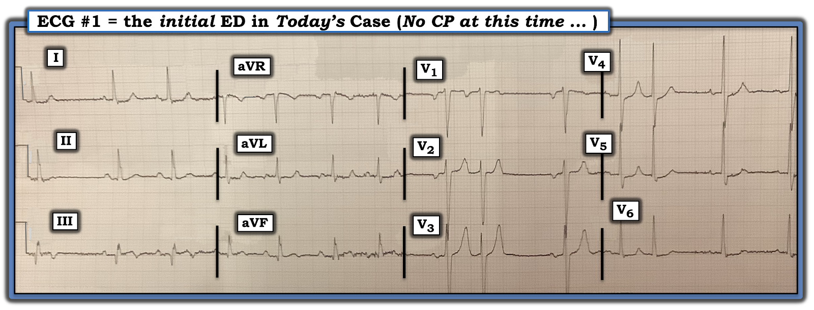
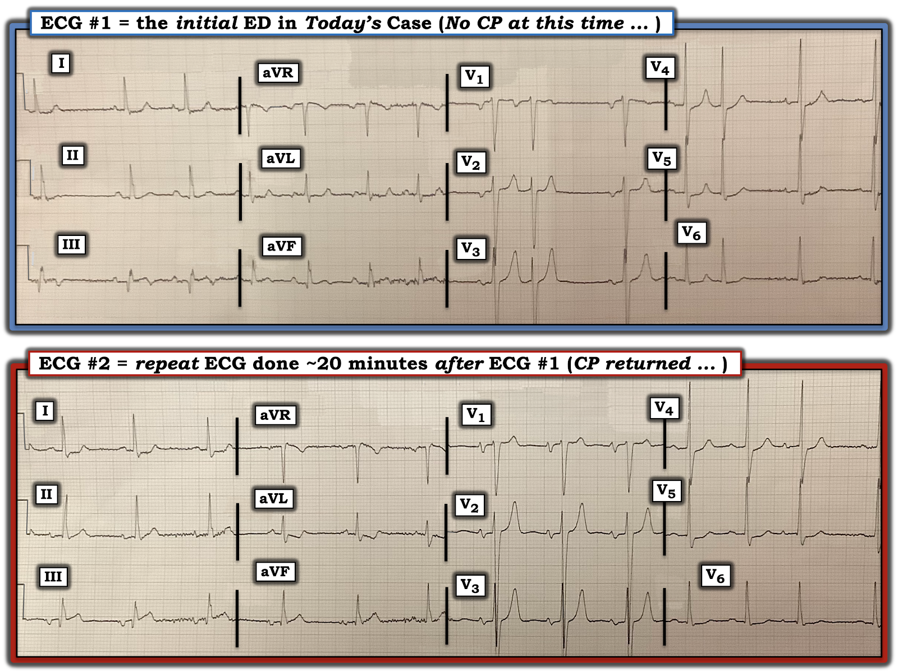
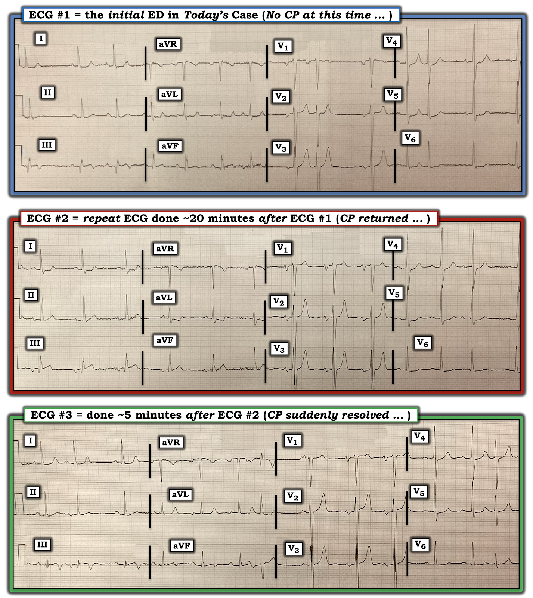
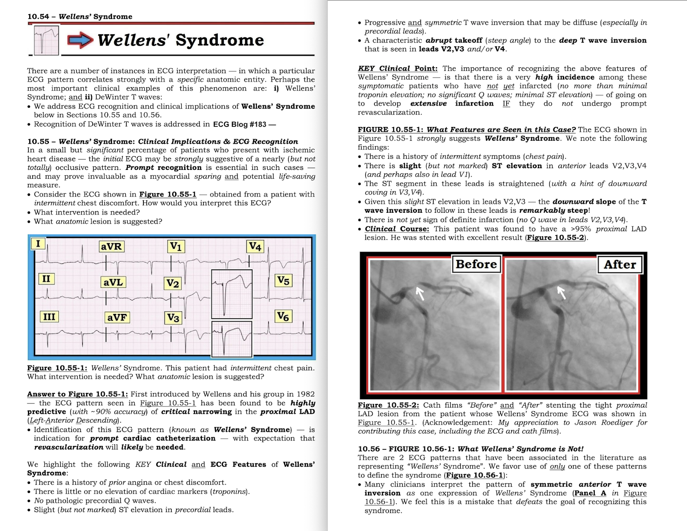
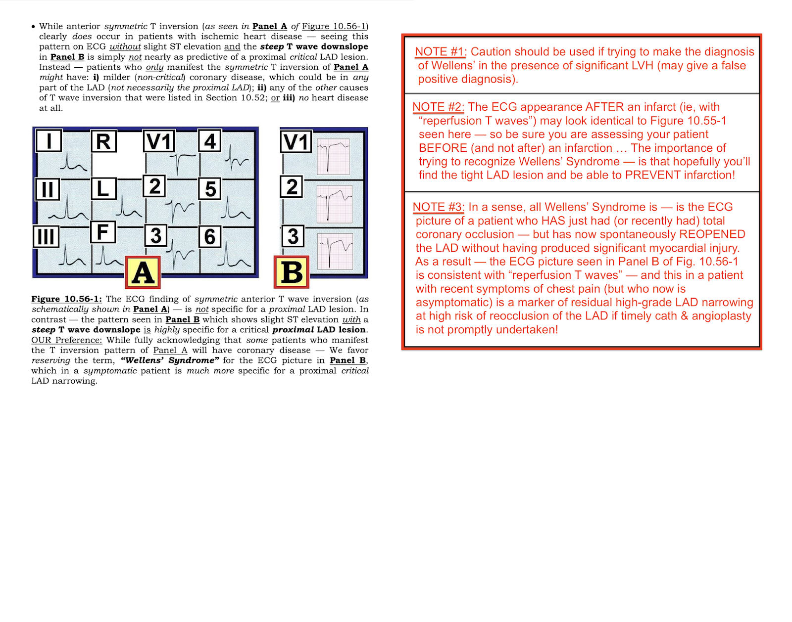

ECG Blog #326 — Ca này đã bị bỏ sót ...
Điện tâm đồ ở Hình-1 được ghi từ một người đàn ông ngoài 60 tuổi, đã biết có bệnh mạch vành — ông gọi đội cấp cứu ngoài viện (EMS) vì một cơn CP (Chest Pain — đau ngực) nặng hơn trong ngày hôm đó. Bệnh nhân kể cơn đau thắt ngực tăng dần trong ~2 tháng trước đó. Điện tâm đồ #1 được ghi khi EMS đến — vào lúc đó cơn đau ngực của bệnh nhân đã hết hoàn toàn.
- Với bệnh sử này — bạn sẽ đọc điện tâm đồ #1 NHƯ THẾ NÀO?
- Bạn có kích hoạt phòng thông tim (cath lab) không?


SUY NGHĨ CỦA TÔI về điện tâm đồ #1:
Nhịp nền ở điện tâm đồ #1 là nhịp xoang. Mặc dù khó chắc chắn về nguyên nhân gây không đều khi không có dải nhịp chuyển đạo dài — có vẻ các nhát đến sớm là do PAC (Premature Atrial Contractions — ngoại tâm thu nhĩ).
- Có nhiễu đường nền đáng kể ở các chuyển đạo chi. Dù vậy — chúng ta vẫn có thể đọc được bản ghi này.
- Ngoài nhịp xoang kèm PAC — các khoảng (PR, QRS, QTc) và trục mặt phẳng trán (khoảng +30 độ) đều bình thường.
Về Lớn các buồng tim:
- Có LAA (Left Atrial Abnormality — bất thường nhĩ trái) — gợi ý bởi thành phần âm sâu của sóng P ở chuyển đạo V1 (Xem ECG Blog #75 — về chẩn đoán trên điện tâm đồ LAA/RAA). Lý do tôi không nghi ngờ đặt quá cao các chuyển đạo V1,V2 — là phức bộ QRS ở các chuyển đạo này trông rất khác so với QRS ở chuyển đạo aVR (Xem ECG Blog #274 — về cách phát hiện khi chuyển đạo V1,V2 bị đặt quá cao trên ngực).
- Tiêu chuẩn LVH được thỏa mãn. Tức là, sóng S của 2 nhát dẫn truyền từ xoang ở chuyển đạo V2 + sóng R ở chuyển đạo V5 ≥35 mm. Tiêu chuẩn điện thế của LVH cũng có thể được thỏa mãn ở chuyển đạo V3 — vì thứ trông như một sóng S rất sâu ở chuyển đạo này đã bị "cắt cụt" bởi giới hạn của giấy ghi điện tâm đồ (Xem ECG Blog #245 — về tiêu chuẩn điện tâm đồ của LVH).
- ST chênh xuống ở các chuyển đạo V5,V6 có thể ít nhất một phần là do tăng gánh thất trái (LV "strain").
Về Thay đổi Q-R-S-T:
- Sóng Q lớn (so với biên độ QRS trong cùng chuyển đạo) hiện diện ở chuyển đạo III và aVF. Một sóng Q nhỏ-nhưng-chắc-chắn-có cũng thấy ở chuyển đạo dưới thứ 3 ( = chuyển đạo II).
- Tăng tiến sóng R (R wave progression) là bình thường — với vùng chuyển tiếp (nơi sóng R trở nên lớn hơn độ sâu sóng S) xảy ra đúng chỗ, giữa chuyển đạo V3-đến-V4.
Các dấu hiệu đáng lo ngại nhất ở điện tâm đồ #1 liên quan đến hình dạng sóng ST-T ở một số chuyển đạo:
- Sóng ST-T ở chuyển đạo III trông tối cấp! Cụ thể — có vẻ có ST chênh lên tinh tế-nhưng-có-thật, với đoạn ST khởi đầu thẳng đuỗn — rồi kết thúc bằng phần âm của sóng T.
- Tuy không gợi ý ST chênh lên — đoạn ST ở chuyển đạo aVF cũng kết thúc bằng phần âm của sóng T.
- Chuyển đạo II (là chuyển đạo dưới thứ 3) — không có những thay đổi này.
- ĐIỂM THEN CHỐT (PEARL) #1: Ở một bệnh nhân đau ngực mới xuất hiện — một MẤU CHỐT để đọc bản ghi này là thay đổi soi gương (reciprocal) ở chuyển đạo aVL (tức là, so với sóng ST-T tối cấp có phần cuối sóng T âm ở chuyển đạo III). Cụ thể — đoạn ST ở chuyển đạo aVL thẳng đuỗn, gập góc nhẹ đi xuống — và kết thúc bằng một sóng T dương cao đến bất ngờ (tức là, giống như những thay đổi ngược chiều kiểu ảnh gương so với những gì ta thấy ở chuyển đạo III). Hình ảnh soi gương này của chuyển đạo aVL so với chuyển đạo III gợi ý OMI thành dưới gần đây (hoặc cấp) cho đến khi chứng minh được điều ngược lại! (Xem ECG Blog #184 về mối liên hệ soi gương "kỳ diệu" trong OMI giữa chuyển đạo III và aVL).
- Ở mức độ ít hơn — thay đổi soi gương cũng thấy ở chuyển đạo bên cao còn lại ( = chuyển đạo I), dưới dạng đoạn ST thẳng đuỗn, ST chênh xuống nhẹ và phần cuối sóng T dương.
- ĐIỂM THEN CHỐT (PEARL) #2: Sóng T cao hơn và nhọn-hơn-mong-đợi ở chuyển đạo V2 và V3. Hình ảnh sóng T nhọn-hơn-mong-đợi này tiếp diễn ở chuyển đạo V4 và V5. Ở một bệnh nhân nghi OMI thành dưới gần đây hoặc cấp — điều này gợi ý mạnh mẽ sóng T tái tưới máu do MI thành sau đi kèm.
- ĐIỂM THEN CHỐT (PEARL) #3: Có ST chênh xuống ở chuyển đạo V4, V5 và V6. Điều này có thể do nhiều yếu tố (tức là, có thể do tăng gánh thất trái (LV "strain") — hoặc — phản ánh ST chênh xuống soi gương tương tự như thấy ở chuyển đạo I và aVL — và/hoặc — có thể phản ánh thiếu máu cục bộ do bệnh nhiều nhánh mạch vành).
- LƯU Ý: Để biết thêm về các khái niệm nêu trên — Xem ECG Blog #193 (về khái niệm OMI = Occlusion-based MI — nhồi máu cơ tim do tắc) — và ECG Blog #258 (về cách "định tuổi" một MI — và hình ảnh sóng T nhọn ở các chuyển đạo trước như dấu hiệu tái tưới máu thành sau).
Tổng Hợp Lại Toàn Bộ:
Bệnh nhân trong ca hôm nay là một người đàn ông ngoài 60 tuổi, đã biết có bệnh mạch vành. Ông kể có các triệu chứng đau thắt ngực gần đây — với một cơn đau ngực nặng hơn vào ngày nhập viện. NHƯNG — cơn đau ngực này đã hết hoàn toàn vào lúc ghi điện tâm đồ ban đầu (trình bày ở Hình-1).
- Với bệnh sử này — điện tâm đồ #1 gợi ý mạnh mẽ rằng OMI dưới-sau (Occlusion-based MI — nhồi máu cơ tim do tắc) đã xảy ra vào thời điểm bệnh nhân lên cơn đau ngực nặng.
- Phần âm cuối của sóng T ở chuyển đạo III và aVF — cũng như sóng T nhọn-hơn-mong-đợi ở các chuyển đạo trước đều gợi ý rằng đã có tái tưới máu tự phát ở các chuyển đạo dưới-sau này.
- Việc cơn đau ngực của bệnh nhân hết hoàn toàn tương ứng với điện tâm đồ #1 — gợi ý mạnh mẽ rằng tại thời điểm này, động mạch "thủ phạm" (gần như chắc chắn là RCA hoặc LCx) đang thông!
- ĐIỂM THEN CHỐT (PEARL) #4: Chuỗi diễn biến này, cùng với trạng thái hết đau vào lúc thấy sóng T tái tưới máu, phù hợp với Hội chứng Wellens (Wellens' Syndrome). Mặc dù các thay đổi sóng ST-T của hội chứng Wellens hầu như luôn liên quan đến tắc động mạch vành LAD (Left Anterior Descending — động mạch liên thất trước) — hội chứng Wellens cũng có thể thấy ở các chuyển đạo dưới — và đó có vẻ chính là điều mà ca hôm nay thể hiện!
- ĐIỂM THEN CHỐT (PEARL) #5: Nhận ra hội chứng Wellens cho ta biết đã có tắc động mạch vành gần đây, kèm tái tưới máu tự phát ít nhất là tạm thời. NHƯNG — Thứ đã tự thông trở lại — cũng có thể dễ dàng tự tắc lại. ĐIỀU CỐT LÕI: Thông tim kịp thời là có chỉ định — với mục tiêu ngăn động mạch "thủ phạm" tắc lại. MẤU CHỐT: Bệnh sử trong ca hôm nay — cùng với các dấu hiệu điện tâm đồ ở Hình-1 — cho thấy cần thông tim ngay!
Thêm Một Chút về Hội chứng Wellens:
Như đã nhấn mạnh ở trên trong các Pearl #4 và #5 — đại đa số các ca hội chứng Wellens gặp ở các chuyển đạo trước, và cho thấy hẹp LAD đoạn gần mức độ nặng. Những bài học rút ra về hội chứng này kể từ lần mô tả đầu tiên của de Zwaan, Bär và Wellens năm 1982 gồm:
- Phải có bệnh sử đau ngực trước đó và cơn đau đã hết vào lúc ghi điện tâm đồ xác định chẩn đoán.
- Troponin không tăng quá mức tối thiểu (nếu có tăng).
- Không có sóng Q nhồi máu mới.
- Có thể có ST chênh lên nhẹ (nhưng không rõ rệt) ở một hoặc nhiều chuyển đạo trước tim.
- Có sóng T hai pha đặc trưng, với sóng T đi xuống nhanh thành phần âm cuối ở một hoặc nhiều chuyển đạo trước tim (thường gặp nhất ở chuyển đạo V2 và/hoặc V3 và/hoặc V4).
Hội chứng Wellens KHÔNG phải là gì:
Hiểu lầm lớn nhất liên quan đến việc hội chứng Wellens không phải là gì! Cách tốt nhất để tránh hiểu lầm này là nắm được sinh lý bệnh của hội chứng. Về bản chất — hình ảnh sóng T hai pha đặc trưng với phần cuối âm phản ánh một sóng T tái tưới máu! Bệnh nhân vừa bị tắc động mạch vành hoàn toàn trong một khoảng thời gian ngắn — nhưng giờ đã tái tưới máu tự phát.
- Cơn đau ngực cần có theo định nghĩa của hội chứng Wellens đã xảy ra vào thời điểm tắc động mạch vành. Nhưng lý do định nghĩa hội chứng Wellens đòi hỏi bệnh nhân phải hết đau vào lúc ghi điện tâm đồ xác định chẩn đoán — là vì tổn thương "thủ phạm" giờ đang thông. NẾU tổn thương "thủ phạm" vẫn còn tắc — thì thay vì là một lời cảnh báo về một nhồi máu lớn sắp xảy ra (đó chính là mục đích của việc nhận ra sớm hội chứng Wellens) — sẽ là nhồi máu cấp đang diễn ra.
- Troponin không tăng quá mức tối thiểu (nếu có tăng) — vì thời gian tắc động mạch vành ngắn đến mức tổn thương cơ tim không vượt quá mức tối thiểu. NẾU troponin tăng nhiều hơn — điều này hàm ý tổn thương cơ tim đáng kể đã xảy ra (theo định nghĩa, nghĩa là bạn đang đối mặt với một nhồi máu đã hoàn tất — và không phải hội chứng Wellens).
- Cũng vì lý do này — lý tưởng là không có sóng Q (hoặc QS) nhồi máu mới. Dù vậy — tôi coi tiêu chuẩn này là "tương đối" — vì đã có bằng chứng cho thấy sóng Q đôi khi có thể hình thành chỉ trong vòng 1-2 giờ — và sóng Q có thể mất đi khi động mạch "thủ phạm" được tái tưới máu nhanh.
- LƯU Ý: ST chênh lên không quá mức nhẹ — vì hội chứng Wellens không phải là STEMI (tức là, nó không phải là MI có "ST chênh lên").
- Thay vào đó — sóng T hai pha đặc trưng với sóng T đi xuống nhanh thành phần cuối âm là dấu hiệu cho thấy đã từng có tắc hoàn toàn trong thời gian ngắn — nhưng động mạch "thủ phạm" giờ đã được tái tưới máu. Dấu hiệu điện tâm đồ này là một sóng T tái tưới máu. Nó có thể trông giống hệt hình ảnh sóng ST-T sau một STEMI có troponin tăng rõ rệt nay đã được tái tưới máu (dù tái tưới máu này là tự phát — hay nhờ điều trị bằng PCI hoặc thuốc tiêu sợi huyết).
- Xin Nhấn Mạnh: Nguy cơ lâm sàng mà hội chứng Wellens đặt ra — là nó chứng tỏ đã có tắc cấp do huyết khối của động mạch "thủ phạm" (dù chỉ trong thời gian ngắn và sau đó mạch máu tự thông trở lại). Nhưng thứ đã tự tắc rồi thông trở lại — có nguy cơ cao sẽ tự tắc lần nữa (và không có gì bảo đảm rằng lần tới khi mạch máu tắc, nó sẽ lại tự thông trở lại).
Ca Bệnh Tiếp Diễn:
Đội EMS đã đọc đúng bản ghi ban đầu trong ca hôm nay là gợi ý cao một biến cố cấp gần đây. Hai mươi phút sau — cơn đau ngực tái phát, và điện tâm đồ #2 được ghi.
CÂU HỎI:
- Với bối cảnh lâm sàng nêu trên — bạn sẽ đọc điện tâm đồ ghi lại ở Hình-2 NHƯ THẾ NÀO?


SUY NGHĨ CỦA TÔI về điện tâm đồ Ghi Lại:
Có vẻ nhịp ở điện tâm đồ #2 đã thay đổi từ nhịp xoang — sang nhịp nhĩ thấp (low atrial rhythm), vì sóng P ở chuyển đạo II giờ nhỏ hơn sóng P ở chuyển đạo I, và sóng P âm hoàn toàn ở chuyển đạo III. Ngoài ra — trục mặt phẳng trán và hình dạng QRS rất giống điện tâm đồ #1. Thay đổi đáng chú ý nhất giữa 2 bản ghi này liên quan đến những khác biệt tinh tế-nhưng-có-thật ở các chuyển đạo chi:
- ĐIỂM THEN CHỐT (PEARL) #6: Biết rằng điện tâm đồ ban đầu trong ca hôm nay được ghi vào lúc bệnh nhân hết đau và gợi ý cao hội chứng Wellens ở chuyển đạo dưới — giúp ích rất nhiều cho việc đọc điện tâm đồ #2, vì chúng ta biết cần tìm gì!
- Sóng T ở từng chuyển đạo dưới của điện tâm đồ #2 giờ đều trông tối cấp! Phần cuối âm của sóng T từng thấy ở chuyển đạo III và aVF của điện tâm đồ #1 đã mất, thay bằng sóng T cao hơn, dương rõ hơn. ST chênh lên nhiều hơn ở chuyển đạo III. Sóng T ở chuyển đạo II rõ ràng đã trở nên dương hơn so với ở điện tâm đồ #1.
- Xác nhận rằng các thay đổi sóng ST-T ở chuyển đạo dưới này là thật — đến từ việc soi kỹ chuyển đạo bên cao I và aVL. Cả hai chuyển đạo này đều cho thấy rõ ST chênh xuống ở điểm J nhiều hơn — kèm giảm biên độ của phần cuối dương của sóng T vốn có ở điện tâm đồ #1. Đoạn ST đi xuống gập góc nhiều hơn ở chuyển đạo aVL tạo nên một hình ảnh soi gương hoàn hảo với tính tối cấp tăng lên và ST chênh lên giờ thấy ở chuyển đạo III.
- ĐIỂM THEN CHỐT (PEARL) #7: Điện tâm đồ #2 được ghi vào lúc cơn đau ngực của bệnh nhân tái phát. Các thay đổi sóng ST-T mô tả ở trên, cùng với việc đau ngực tái phát, cho ta biết rằng mạch máu "thủ phạm" (nhiều khả năng nhất là RCA) đã tắc lại một lần nữa!
Đáng tiếc — các thay đổi điện tâm đồ nêu trên đã không được các bác sĩ lâm sàng ở trung tâm tiếp nhận PCI nhận ra. Bệnh nhân không được chấp nhận là đối tượng can thiệp cấp.
Ca Bệnh Tiếp Diễn:
Năm phút sau — cơn đau ngực của bệnh nhân đột ngột hết. Một điện tâm đồ khác được ghi vào lúc này (Hình-3).
CÂU HỎI:
- Việc điện tâm đồ #3 được ghi vào lúc cơn đau ngực đột ngột hết — có phù hợp với cách đọc ca này cho đến giờ không?


SUY NGHĨ CỦA TÔI về điện tâm đồ #3:
Có vẻ nhịp xoang đã trở lại ở điện tâm đồ #3, dù kèm PAC (tức là, sóng P của nhát thứ 1 và thứ 3 ở chuyển đạo II là dẫn truyền từ xoang — và một lần nữa cho thấy sóng P lớn hơn sóng P ở chuyển đạo I).
- Động mạch "thủ phạm" (nhiều khả năng nhất là RCA) — đã thông trở lại một lần nữa! Chúng ta biết điều này — vì cơn đau ngực của bệnh nhân đột ngột hết, tương ứng với điện tâm đồ #3, cho thấy sóng T tối cấp ở chuyển đạo dưới đã mất đi (giờ cho thấy sóng T đảo ngược đối xứng ở chuyển đạo III và aVF = sóng T tái tưới máu!).
- Chuyển đạo bên I và aVL giờ cho thấy ST chênh xuống đã hết, với phần cuối dương rõ rệt của sóng T trở lại.
- ST chênh xuống ở các chuyển đạo trước tim bên V4,5,6 cũng ít hơn so với ở điện tâm đồ #2.
- ĐIỀU CỐT LÕI: Trong vòng 25 phút — các điện tâm đồ liên tiếp ở Hình-3 xác nhận rằng bệnh nhân hôm nay biểu hiện một phiên bản hội chứng Wellens ở chuyển đạo dưới, với thay đổi sóng ST-T "động" (dynamic) cho thấy động mạch "thủ phạm" thông lại và tắc lại lặp đi lặp lại.
Bài học Cần Rút ra:
- Tầm quan trọng của việc ghi các điện tâm đồ liên tiếp ở bệnh nhân có triệu chứng mới không thể nhấn mạnh cho đủ.
- Đối chiếu các dấu hiệu trên các điện tâm đồ liên tiếp với sự xuất hiện và mất đi (và với mức độ nặng tương đối) của triệu chứng bệnh nhân có thể kể một "câu chuyện" giúp bạn biết khi nào động mạch "thủ phạm" đã thông trở lại và/hoặc đang tắc lại.
- Cần nhận thức rằng diễn tiến triệu chứng thay đổi như vậy, cùng với thay đổi sóng ST-T "động" , là chỉ định thông tim ngay (vì việc mạch máu "thủ phạm" tự thông trở lại có thể chỉ là tạm thời — và lần tới khi mạch máu tắc, nó có thể không tự thông trở lại nữa).
- Nhóm nhân viên y tế tiếp nhận trong ca hôm nay đã không nhận ra ý nghĩa của diễn tiến điện tâm đồ tương quan với mức độ nặng thay đổi của triệu chứng. Hệ quả là — can thiệp cấp đã không được thực hiện. Thông tin theo dõi hạn chế mà tôi có về ca này cho thấy biến cố cấp chỉ được nhận ra về sau khi troponin huyết thanh trả về tăng. Còn nhiều điều cần phải học.
=======================================
Lời cảm ơn: Xin cảm ơn Sam Collis (từ Anh) đã chia sẻ ca bệnh và bản ghi này.
=======================================
Các bài ECG Blog Liên quan đến Ca Hôm nay:
- ECG Blog #205 — Ôn lại Cách tiếp cận Hệ thống của tôi trong đọc điện tâm đồ 12 chuyển đạo.
- ECG Blog #193 — minh họa cách dùng Nghiệm pháp Soi gương (Mirror Test) để dễ nhận ra MI thành sau cấp. Bài blog này ôn lại những điều cơ bản để dự đoán Động mạch "Thủ phạm".
- ECG Blog #294 — Làm sao biết NẾU động mạch "thủ phạm" đã được tái tưới máu.
- ECG Blog #194 — AIVR là dấu hiệu động mạch "thủ phạm" đã được tái tưới máu.
- ECG Blog #254 — Hội chứng Wellens là gì và không phải là gì.
- ECG Blog #320 — Hội chứng Wellens với OMI nhánh chéo thứ 1 (1st Diagonal) cấp.
- Để ôn lại "Lịch sử" của hội chứng Wellens (từ bài báo gốc năm 1982) — Vui lòng XEM Bình luận của tôi ở cuối trang trong bài đăng ngày 12 tháng 8 năm 2022 trên Dr. Smith's ECG Blog.
- ECG Blog #285 — một ví dụ khác về MI thành sau cấp (với kết quả dương tính của Nghiệm pháp Soi gương).
- ECG Blog #246 — một ví dụ khác về MI thành sau cấp (với kết quả dương tính của Nghiệm pháp Soi gương).
- ECG Blog #80 — ôn lại cách dự đoán động mạch "thủ phạm" (và đưa ra một ca khác minh họa Nghiệm pháp Soi gương để chẩn đoán MI thành sau cấp).
- ECG Blog #184 — minh họa mối liên hệ ngược chiều kiểu ảnh gương "kỳ diệu" khi thiếu máu cục bộ cấp giữa chuyển đạo III và chuyển đạo aVL (được trình bày trong Audio Pearl #2 của bài blog này).
- ECG Blog #167 — một ca khác về mối liên hệ ngược chiều kiểu ảnh gương "kỳ diệu" giữa chuyển đạo III và chuyển đạo aVL đã xác nhận OMI cấp.
- ECG Blog #271 — Ôn lại cách xác định đường nền của đoạn ST (có bàn luận về thực thể thiếu máu cục bộ dưới nội tâm mạc lan tỏa).
- ECG Blog #266 — Ôn lại cách phân biệt MI thành sau với sóng T de Winter (với phần cuối sóng T dương ở các chuyển đạo trước phản ánh sóng T "tái tưới máu").
- ECG Blog #258 — Cách "định tuổi" một nhồi máu dựa trên điện tâm đồ ban đầu.
===========================
PHẦN BỔ SUNG (ngày 15 tháng 8 năm 2022):
- Dưới đây là một loạt đường link và tài liệu khác liên quan đến việc xác định động mạch “thủ phạm” — cùng suy nghĩ của tôi về lý do nên thay thuật ngữ “STEMI” bằng “OMI” (với hy vọng tăng đáng kể khả năng phát hiện tắc động mạch vành cấp).
Tải PDF miễn phí từ các phần liên quan trong ECG-2014-ePub của tôi:
- Tệp PDF: Tổng quan về tuần hoàn tim và động mạch “thủ phạm” trong MI cấp —
- Tệp PDF: MI thành sau và “Nghiệm pháp Soi gương” (Mirror Test) —


ECG Media PEARL #10 (Audio 10 phút) hôm nay — ôn lại khái niệm vì sao thuật ngữ “OMI” ( = Occlusion-based MI — nhồi máu cơ tim do tắc) nên thay thế thuật ngữ quen thuộc hơn là STEMI — và — ôn lại những điều cơ bản về cách dự đoán động mạch "thủ phạm".

ECG Media PEARL #11 (Audio 6 phút) hôm nay — Ôn lại cách biết NẾU động mạch “thủ phạm” (tức là, bị tắc cấp) đã được tái tưới máu, dựa trên tiêu chuẩn lâm sàng và điện tâm đồ.

Audio PEARL #26a (7:40 phút) — Ôn lại Hội chứng Wellens là gì — và không phải là gì (từ ECG Blog #254).
- BẤM VÀO ĐÂY — để xem bản PDF của tệp 3 trang về hội chứng Wellens xuất hiện ở Hình-3 và Hình-4.



